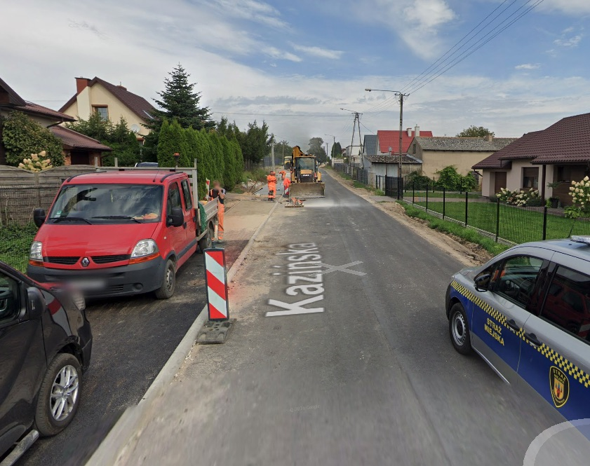
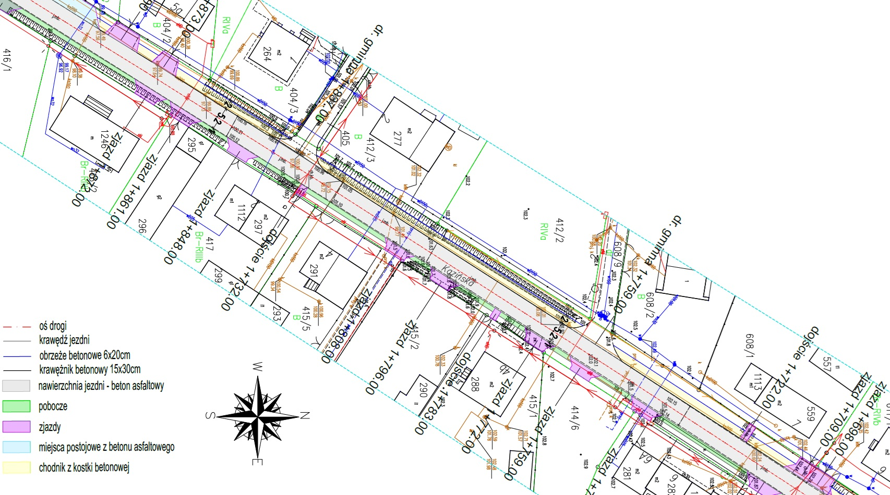
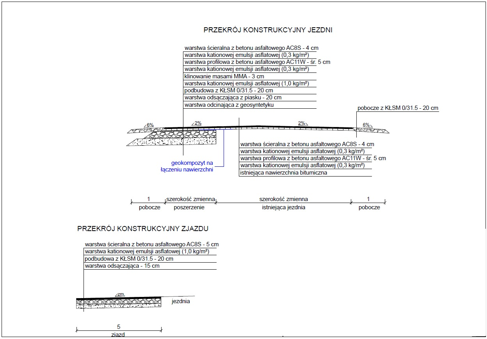
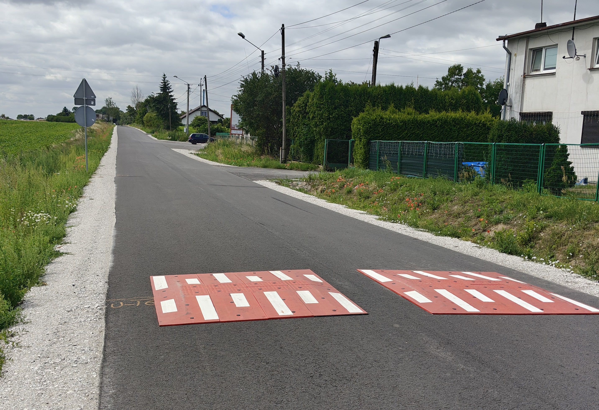
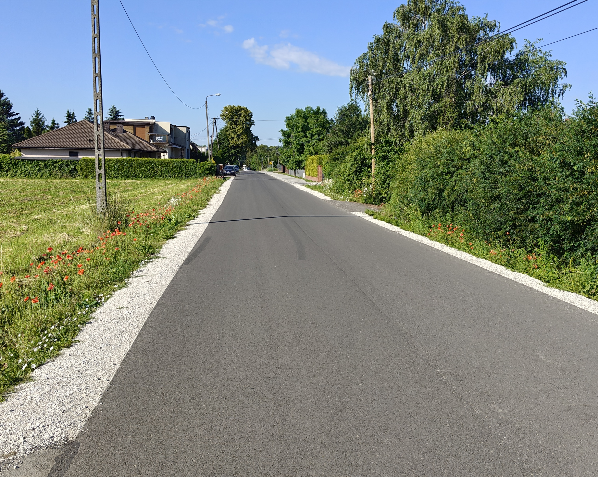

Przebudowa drogi powiatowej nr 1924C
← Wróć do projektów drogowych
Droga w trakcie przebudowy
Projekt zagospodarowania terenu
Przekroje konstrukcyjne
Droga po zakończeniu prac
Droga po zakończeniu prac
Zdjęcia i dokumentacja










Dane zadania
- Nazwa zadania
- Przebudowa drogi powiatowej nr 1924C
- Zarządca drogi
- Zarząd Dróg Powiatowych
- Moja rola
- Asystent projektanta
- Status
- Zakończona
Zakres opracowania
Projekt zakładał wykonanie remontu wraz z elementami przebudowy drogi powiatowej na odcinku 1.129 m. W ramach remontu zaplanowano: wykonanie nakładki bitumicznej, wymianę nawierzchni istniejącego chodnika, wymianę przepustów, odmulenie rowów. Przebudową objęto odcinek w centrum miejsćowości Ślesin - poszerzono jezdnię oraz dobudowano nowy odcinek chodnika. W związku z bezpośrednią lokalizacją przy drodze przedszkola oraz ośrodka zdrowia wprowadzono dodatkowe urządzenia bezpieczeństwa ruchu w postaci wyspowych progów zwalniających.
Parametry drogi
| Parametr | Stan istniejący | Rozwiązanie projektowane |
|---|---|---|
| Szerokość jezdni | 4,9 - 5,2 m | 5,0 - 5,2 m |
| Nawierzchnia jezdni | bitumiczna | beton asfaltowy |
| Pobocza | 0,75 m / gruntowe | 1,0 m / kruszywo łamane |
| Chodnik | 109 mb o szer. 1,3 m | 382 mb o szer. 2,0 m |
| Nawierzchnia chodnika | kostka betonowa | kostka betonowa |
Parametry projektowe
- Długość odcinka
- 1.129 mb
- Klasa drogi
- L
- Prędkość do projektowania
- 40 km/h
- Pochylenie poprzeczne
- Daszkowe 2%
- Powierzchnia jezdni
- 5.608 m2
- Powierzchnia chodnika
- 586 m2
- Powierzchnia zjazdów
- 1.580 m2